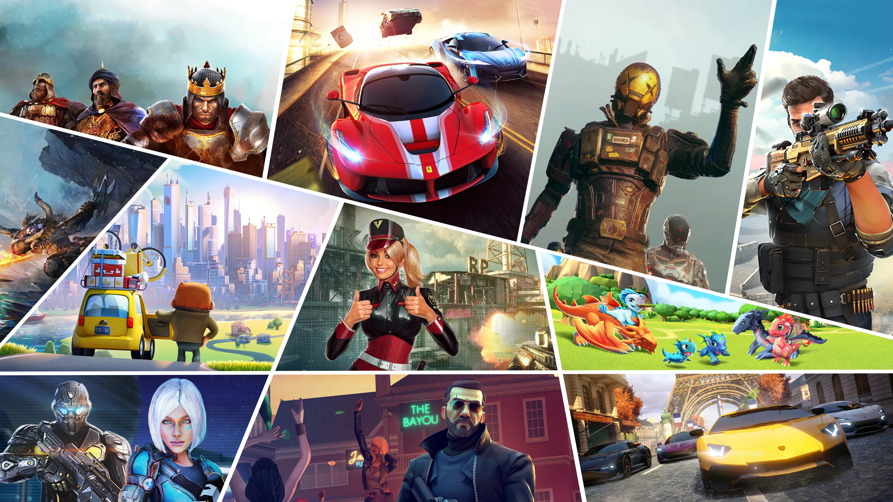
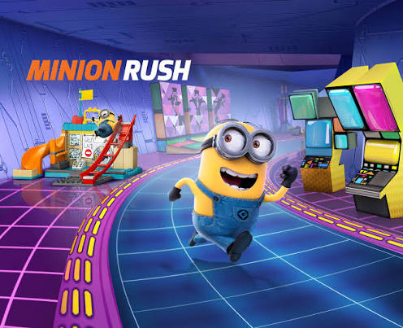
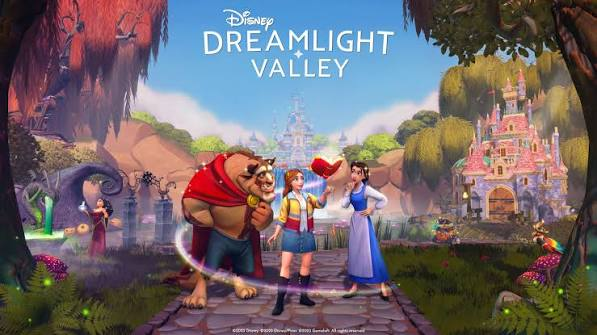
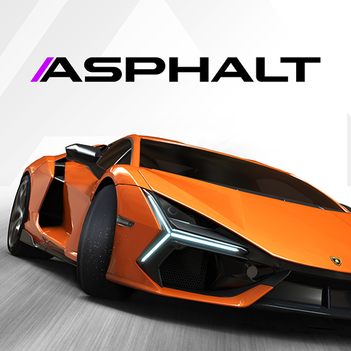
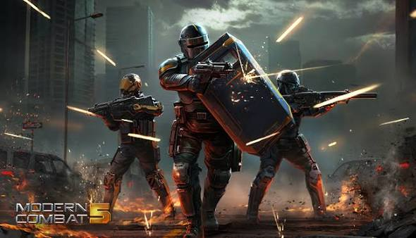
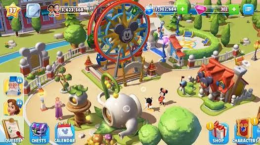

Quels sont les produits de Gameloft ?
Gameloft est un éditeur et développeur de jeux vidéo créé en 1999. L’entreprise propose des jeux sur mobile, PC et consoles, dans des genres variés : course, aventure, simulation et jeux familiaux. Son catalogue comprend notamment les séries Asphalt et Dungeon Hunter, ainsi que des jeux inspirés d’univers connus comme Disney et Moi, moche et méchant.
Quels jeux Gameloft sont les plus tendances par catégorie ?

1. Jeu de course poursuite
Minion Rush est un jeu de course sans fin où l’on incarne un Minion. Il faut courir, éviter les obstacles, récupérer des bananes et accomplir des missions dans des décors inspirés des films Moi, moche et méchant. Ce jeu mobile fait partie des titres emblématiques de Gameloft.
2. Jeu d'aventure
Disney Dreamlight Valley est un jeu d’aventure et de simulation dans lequel on explore une vallée peuplée de personnages Disney et Pixar. Le joueur réalise des quêtes, aménage son village et développe des relations avec les personnages. Le jeu est disponible sur plusieurs plateformes et reçoit du contenu supplémentaire.


3. Jeu de course en voiture
Asphalt Legends (anciennement Asphalt 9: Legends) est un jeu de course arcade. Il propose des voitures de marques réelles, des circuits dans différents environnements et des courses rapides, en solo ou en multijoueur. Gameloft continue de mettre en avant cette série, qui compte parmi ses franchises les plus connues.
4. Jeu de combat
Modern Combat 5: Blackout est un jeu de tir à la première personne. Le joueur participe à une campagne solo composée de missions et peut aussi affronter d’autres joueurs en multijoueur. Plusieurs classes de soldats et équipements permettent d’adapter son style de jeu.


5. Jeu de gestion et de construction
Disney Magic Kingdoms est un jeu de gestion dans lequel on construit et développe son propre parc Disney. Le joueur peut y installer des attractions, accueillir des personnages Disney et Pixar et accomplir des missions pour agrandir le parc.
Quelles sont les conditions d’utilisation ?
Tous les jeux Gameloft sont soumis aux Conditions d'utilisation en vigueur depuis le 1er janvier 2008, et ont été mises à jour le vendredi 23 mai 2025.